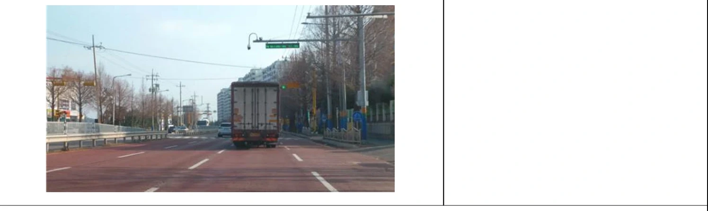

684. Дараах нөхцөлөөс ойлгож болох мэдээллээс буруу 2-ыг сонгоно уу.

- ①Урд талд явган хүний гарц байна.
- ②Урд талын тээврийн хэрэгслийн гэрлэн дохио ногоон байна.
- ③Замын баруун талд унадаг дугуйн зориулалтын зам байна.
- ④Энэ замын хурдны хязгаар цагт 30 км байна.
- ⑤Урд явж буй автомашинууд тоормосны дөрөө ашиглаж байна.
Хариулт харах
Зөв хариулт
④ Энэ замын хурдны хязгаар цагт 30 км байна.
⑤ Урд явж буй автомашинууд тоормосны дөрөө ашиглаж байна.
Үндэслэл
Энэ газар хүүхдийн хамгаалалтын бүс. Хуулийн 12 дугаар зүйлийн 1 дэх хэсгээр хурдыг 30 км/ц-аас ихгүйгээр хязгаарлаж болно. Гэхдээ 30 км/ц-аас өөр хязгаар тогтоосон хүүхдийн хамгаалалтын бүсүүд ч олон бий. Тоормос гишгэхэд машины арын тоормосны гэрэл асна. Зурагт хурдны дээд хязгаарыг харуулах тэмдэг харагдахгүй бөгөөд урд яваа хоёр машины тоормосны гэрэл хоёулаа асаагүй байна.
Үндэслэлийн текст нь машин орчуулга.